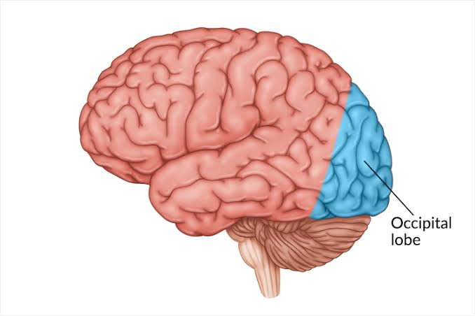

The occipital lobe is located at the back of the brain and is responsible for processing visual information received from the eyes. It helps us recognize colors, shapes, movement, and objects.

Interprets visual signals sent from the eyes.
Helps identify and distinguish colors.
Allows us to identify people, places, and objects.
Light enters the eyes and is converted into electrical signals. These signals travel through the optic nerve to the occipital lobe, where the brain interprets what we see.
Neurotechnology researchers study the occipital lobe to develop technologies that may help restore vision and improve understanding of how the brain processes visual information.
Without the occipital lobe, our ability to understand visual information would be greatly reduced. It plays a critical role in how we interact with the world around us.
Even though your eyes collect visual information, it is your occipital lobe that helps your brain understand what you are seeing.